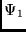
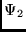

Next: MPI Implementation
Up: BP_EIV
Previous: Program Structure
Contents
bp_mat can adjust the final energies of a given LS term,
by shifting the diagonal matrix elements by an amount specified
by the user. For each term, the program asks the
users for shifts (in cm) which lower the level relative
to the lowest by the specified amount. The results are now written to a
file called <name>.new. Usually, this program is run first
without considering adjustments. The tables
program may then be used to find the spectrum from the energies
in a <name>.j file (this file may be a concatenated file
from separate bp_eiv runs). By comparing with observation,
a shift can be determined, it is usually equal to the
difference computed - observed in cm. When
interactions are not strong, this
procedure needs to be applied only once to
bring energy levels into agreement with observation, but for strong
mixing, several iterations may be needed. This adjustment process has
not been automated.
Each state is labeled according to the term of the largest component in
the eigenvector. This scheme will not produce unique labels when three
or more CSFs interact strongly. In such cases, the user will need to
edit the file and determine a suitable, unique sets of labels.
Also included for each state,
the g_J parameter for the Breit-Pauli expansion [#!PJ-gj!#],
and the g_J for an LS approximation.
This file is formatted. Expansion coefficients
are presented to 8 decimal places.
Figure 9.33:
IO files for the serial version.
|  |
Next: MPI Implementation
Up: BP_EIV
Previous: Program Structure
Contents
2001-10-11